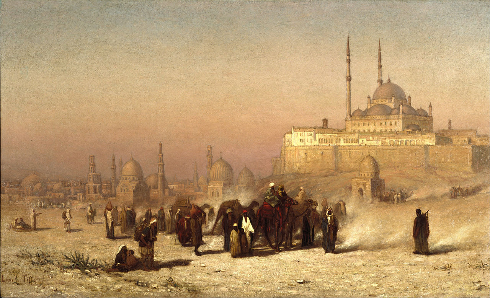

L'Egypte
Terre de contrastes, composée de sublimes paysages désertiques, avec une splendeur inégalable grâce au fleuve du Nil.
Un héritage culturel et historique ...
Durant près de trois millénaires, la vallée du Nil vit prospérer une des civilisations les plus brillantes de l'Histoire. L'invention d'une écriture originale sous forme d'idéogrammes syllabiques, les hiéroglyphes, peu de temps après l'apparition du cunéiforme en Mésopotamie vers -3300, contribue à sortir l'espèce humaine de la Préhistoire. L’Égypte des pharaons put ainsi largement s'épanouir pour atteindre son apogée au xiiie siècle avant notre ère, laissant une œuvre monumentale au patrimoine mondial.
Méhémet Ali, qui règne jusqu'en 1848 apparaît comme un grand réformateur du pays dont il modernise les structures. Il utilise l’État pour mettre en œuvre une révolution industrielle. Il constitue des monopoles d’État, achète des machines textiles modernes en Europe, fait construire des hauts fourneaux et des aciéries, confisque les terres des propriétaires mamelouks et y fait cultiver des denrées destinées à l'exportation.
Le royaume d'Égypte accède à l'indépendance en 1922. En dépit d'une longue tutelle ottomane puis britannique, sa culture reste aujourd'hui encore fortement marquée par l'identité arabe, dont le président Gamal Abdel Nasser fut l'un des plus célèbres pionniers.Le gouvernement de Nasser entreprend de moderniser les infrastructures et de doter l’Égypte d'une industrie. Des nationalisations sont effectuées et le secteur public devient prépondérant.
La situation du pays
| Président de la république : | Abdel Fattah al-Sissi |
| Capitale : | Le Caire |
| Langue officielle : | Arabe |
| Superficie totale : | 1 001 450 km2 |
| Superficie en eau : | 0,6 % |
| Indépendance (date) : | 28 février 1922 |
| Population totale : | 104 124 440 hab. |
| Densité de population : | 104 hab./km2 |
| Monnaie : | Livre égyptienne (EGP) |
- Le pays est en proie à de grandes difficultés économiques, malgré les ressources en pétrole et surtout en gaz naturel.
- La grande majorité des Égyptiens (environ 95 %41) se réclament de l'islam sunnite, introduit en Égypte en 642.
- l'Égypte est le troisième pays le plus peuplé d'Afrique derrière le Nigeria et l'Éthiopie.
- Le Al Ahly Sporting Club est le plus connu du pays et le plus titré du continent, avec huit Ligues des champions à son palmarès.
Nil ... Nil, Nil !
Il apporte la vie en fertilisant la terre et garantit l'abondance. Il joua un rôle très important dans l'Égypte antique, du point de vue économique, social (c'était autour de lui que se trouvaient les plus grandes villes), agricole (grâce au précieux limon des crues) et religieux. Fleuve nourricier de cette civilisation, il fut divinisé sous le nom d'Hâpy, personnifiant la crue du Nil dans la mythologie égyptienne.
La mer rouge
Un aquarium grandeur nature
Il y a de nombreux hauts-fonds en mer Rouge, renommés pour l’exubérance de la vie sous-marine qui s’y abrite, que ce soient de nombreuses variétés de poissons ou de magnifiques coraux. La température y est relativement élevée et permet à ces derniers de se développer de manière luxuriante. Elle est peuplée de plus de 1 000 espèces d’invertébrés, de 200 espèces de coraux et d’au moins 300 espèces de requins.